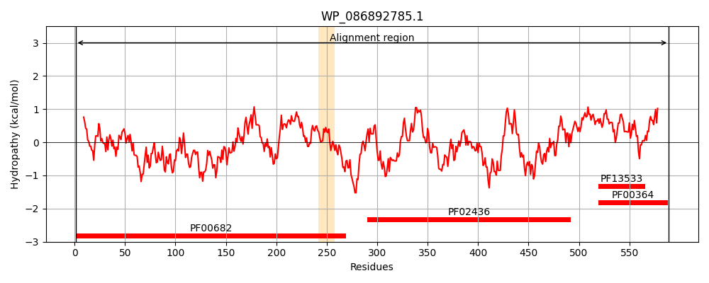
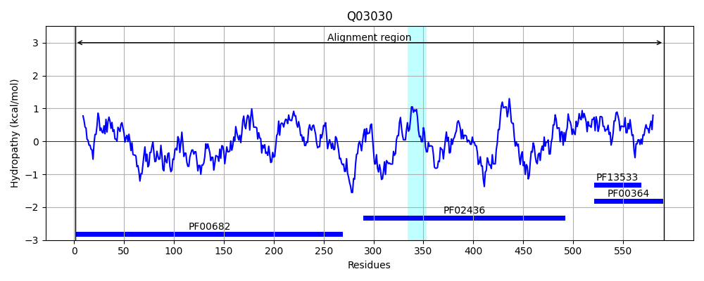
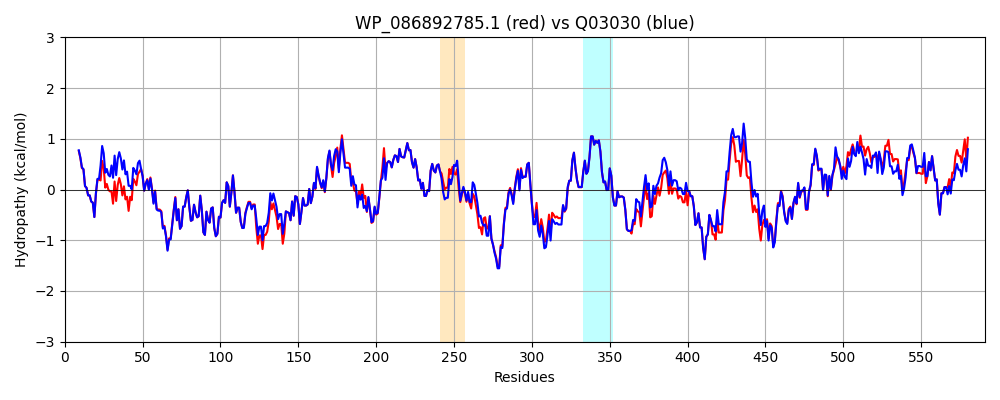

Hit Accession: Q03030
Hit TCID: 3.B.1.1.1
Hit Description: gnl|BL_ORD_ID|12100 gnl|TC-DB|Q03030|3.B.1.1.1 OXALOACETATE DECARBOXYLASE ALPHA CHAIN (EC 4.1.1.3) - Salmonella typhimurium.
Mach Len: 591
e:0.000000
Query TMS Count : 1
Hit TMS Count: 1
TMS-Overlap Score: 0.000000
Predicted Substrates:CHEBI:9175;sodium(1+)
BLAST Alignment:
Score: 2722 , Bit scores: 1053 bits, E-value: 0.0e+00, Alignment length: 591, Percentage identity: 91
Query: 1 MTVAITDVVLRDAHQSLFATRLRLDDMLPVAAQLDDVGYRSLECWGGATFDACIRFLGEDPWVRLRELKKAMPKTPLQMLLRGQNLLGYRHYADDVVERFVERAVKNGMDVFRVFDAMNDPRNMQAALQAVRRHGAHAQGTLSYTTSPAHTLQTWLDLTEQLLETGVDSVAIKDMSGILTPGAAFELVSEIKKRYDVTLHLHCHATTGMAEMALLKAIEAGVDGVDTAISSMSATYGHPATEALVATLAGTPYDTGLNIHKLESIAAYFREVRKKYHAFEGQLKGTDSRILVAQVPGGMLTNLESQLKQQSAAHRLDEVLAEIPRVREDLGFIPLVTPTSQIVGTQAVLNVLTGERYKTIAKETAGILKGEYGRTPAPVNAALQARVLEGADPVTCRPADLLKPELAQLEADVRRQAQEKGITLAENAIDDVLTVALFPQPGLKFLENRHNPAAFEPVPQAEAAQPVAKAEKPAASGVYTVEVEGKAFVVKVSDGGDVSQLSAAPVAA--APAAAPAPAGAGTPVTAPLAGTIWKVLAAEGQTVSEGEVLLILEAMKMETEIRAAQAGTVRGIAVKAGDAVAVGDTLLQLA 589
MT+AITDVVLRDAHQSLFATRLRLDDMLP+AA LDDVGY SLECWGGATFDACIRFLGEDPW+RLRELKKAMPKTPLQMLLRGQNLLGYRHYADDVVERFVERAVKNGMDVFRVFDAMNDPRNM+AALQAVR HGAHAQGTLSYTTSPAHTLQTWLDLTEQLLETGVDS+AIKDMSGILTP AA+ELVSEIKKR++V LHLHCHATTGMAEMALLKAIEAGVDGVDTAISSMSATYGHPATEALVATLAGT +DTGL+I KLE+IAAYFREVRKKYHAFEGQLKG DSRILVAQVPGGMLTNLESQLKQQ+AA +LD+VLAEIPRVREDLGFIPLVTPTSQIVGTQAVLNVLTGERYKTIAKETAGILKGEYG TP PVNAALQARVLEG PVTCRPADLLKPELA+LEADVRRQAQEKGITLA NAIDDVLTVALFPQ GLKFLENR+NPAAFEP+PQAEAAQPVAKAEKPAASG+YTVEVEGKAFVVKVSDGGD+SQL+AA AA AP A APAGAGTPVTAPLAG IWKV+A EGQTV+EG+VLLILEAMKMETEIRAAQAGTVRGIAVK+GDAV+VGDTL+ LA
Sbjct: 1 MTIAITDVVLRDAHQSLFATRLRLDDMLPIAAALDDVGYGSLECWGGATFDACIRFLGEDPWLRLRELKKAMPKTPLQMLLRGQNLLGYRHYADDVVERFVERAVKNGMDVFRVFDAMNDPRNMKAALQAVRSHGAHAQGTLSYTTSPAHTLQTWLDLTEQLLETGVDSIAIKDMSGILTPMAAYELVSEIKKRFEVRLHLHCHATTGMAEMALLKAIEAGVDGVDTAISSMSATYGHPATEALVATLAGTEHDTGLDILKLENIAAYFREVRKKYHAFEGQLKGYDSRILVAQVPGGMLTNLESQLKQQNAADKLDQVLAEIPRVREDLGFIPLVTPTSQIVGTQAVLNVLTGERYKTIAKETAGILKGEYGHTPVPVNAALQARVLEGGAPVTCRPADLLKPELAELEADVRRQAQEKGITLAGNAIDDVLTVALFPQIGLKFLENRNNPAAFEPLPQAEAAQPVAKAEKPAASGIYTVEVEGKAFVVKVSDGGDISQLTAAVPAASSAPVQAAAPAGAGTPVTAPLAGNIWKVIATEGQTVAEGDVLLILEAMKMETEIRAAQAGTVRGIAVKSGDAVSVGDTLMTLA 591 | Protein Hydropathy Plots: |
|---|
|  |  |
Pairwise Alignment-Hydropathy Plot:
|
|---|
|  |